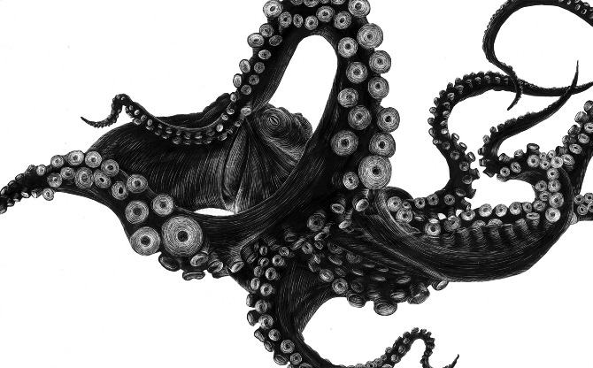

альбом просто отличный :)
The XX - Intro
Не альбомная версия. 5 минут против чуть больше 2 в альбоме.
Nuyya
Какая отличная тема на французском :)
Amon Tobin - ISAM Live
Небольшое видео о том, как делали. Жаль, к нам не приедет, обязательно сходил бы!
Как убить ковбоя
Octopus

Optimism vs. Pessimism

Клевые плакатики :)
Apparat - Countdown
Чуваки заделали отличное видео. А еще у него вышел новый альбом, про который еще даже discogs.com ничего не знает, а я уже слушаю :)
Trentemøller - The Last Resort (2006)

Отличный альбом!